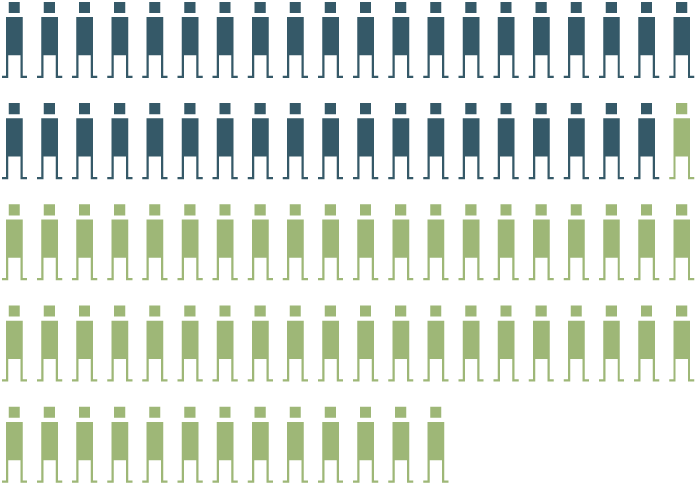

Source: U.S. Census 2020 PL 94-171,
Colorado Independent Redistricting Commissions,
Redistricting Data Hub, NYS LATFOR

Source: U.S. Census 2020 PL 94-171, Redistricting Data Hub, Colorado Independent Redistricting Commissions, NYS LATFOR

Source: U.S. Census 2020 PL 94-171, Redistricting Data Hub, Colorado Independent Redistricting Commissions, NYS LATFOR